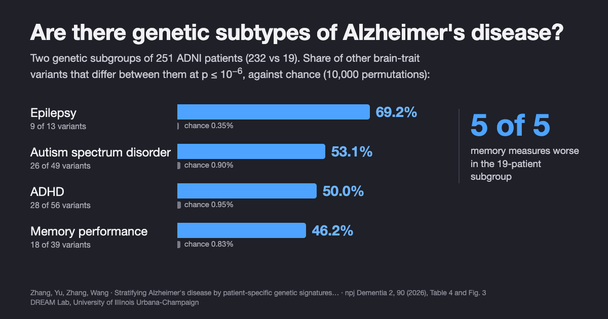

Are There Genetic Subtypes of Alzheimer's Disease? What We Found
When we built a genetic profile for each patient instead of one average for the whole cohort, Alzheimer's patients split into two groups with different memory performance, separated by variants linked to epilepsy, ADHD and autism.
By Jiahui Zhang, Haohan Wang, and others · · About our npj Dementia 2026 paper
Are there genetic subtypes of Alzheimer's disease? Apart from rare inherited forms and the APOE4 gene, medicine still treats late-onset Alzheimer's as one genetic disease, and most genetic studies estimate one average effect per variant for everyone. Our paper, Stratifying Alzheimer's disease by patient-specific genetic signatures reveals cognition-linked and cross-disease heterogeneity, by Jiahui Zhang, Ziyu Yu, Xingcai Zhang and Haohan Wang (University of Illinois Urbana-Champaign and Stanford University School of Medicine, npj Dementia, 2026), built a genetic profile for each of 251 Alzheimer's patients in the Alzheimer's Disease Neuroimaging Initiative (ADNI). The profiles split the patients into two groups, of 232 and 19, and the smaller group did worse on all five memory measures reported. The authors call the result exploratory: one cohort, a small second group, and no replication yet.
Key findings
- In the npj Dementia 2026 study by Zhang, Yu, Zhang and Wang (University of Illinois Urbana-Champaign), patient-specific genetic profiles from heteroscedastic personalized regression (Het-PR) split 251 Alzheimer's patients in ADNI into two subgroups of 232 and 19 patients.
- The 19-patient subgroup performed worse on all five episodic-memory measures reported (MMSE immediate recall, RAVLT delayed recall, RAVLT retention ratio, RAVLT percent forgetting and the ADNI memory composite), with Welch t-test p-values from 0.016 to 0.000115, although age, sex, education and baseline MMSE did not differ between the groups.
- The split was stable: it was recovered exactly in 500 runs that each used 80% of the patients, with 50% to 90% of the variants, and after removing up to the 500 strongest variants, and it was not explained by ancestry principal components or genotype quality.
- Variants previously linked to other brain traits separated the two subgroups far beyond chance (empirical p < 10−4 in 10,000 label permutations); epilepsy-linked variants showed the largest share, 9 of 13 (69.2%) at p ≤ 10−6, including rs7587026 near the sodium channel gene SCN1A.
Note for patients and families: this is early research on groups of people in one study. It does not offer a test, a diagnosis or a treatment recommendation. If you have questions about Alzheimer's genetics for yourself or a relative, a clinician or genetic counselor is the right person to ask.
Why look for genetic subtypes of Alzheimer's at all?
Two people with the same Alzheimer's diagnosis can decline in very different ways, and imaging, autopsy and spinal-fluid studies keep finding recurring patterns (we review this evidence below, and Haohan Wang's essay Why Alzheimer's patients with the same diagnosis differ covers it for a general reader). Genetics should be part of that picture: genome-wide association studies have found APOE and a growing list of other risk loci, in genes for lipid metabolism, immune regulation and endosomal trafficking.
The difficulty is the method. A genome-wide association study asks whether a variant raises risk on average across thousands of people. If a variant matters a lot for some patients and not at all for others, the average blurs it, and any subgroups that carry different combinations of risk variants stay hidden. The npj Dementia paper asks a different question: for this particular patient, which variants carry evidence of association with the diagnosis?
Key terms
- Alzheimer's disease heterogeneity
- Systematic differences among people with Alzheimer's in symptoms, brain pathology, molecular changes, genetics and rate of decline.
- Single-nucleotide polymorphism (SNP)
- A position in the genome where people commonly carry different DNA letters; a person's genotype at a SNP is usually coded as 0, 1 or 2 copies of the less common (minor) allele.
- Personalized regression
- A regression model that estimates a separate set of effects for each person rather than one shared set for the whole sample.
- Heteroscedastic personalized regression (Het-PR)
- The paper's method: to estimate one patient's effects, it uses everyone's data but treats each other person's difference as extra noise, so people with less similar genetic backgrounds get less weight.
- Patient stratification
- Dividing patients with the same diagnosis into subgroups that share measurable features, such as a genetic profile, to study whether they differ in course or treatment response.
- ADNI
- The Alzheimer's Disease Neuroimaging Initiative, a long-running North American research cohort with genetic, imaging, biomarker and cognitive data, available to researchers under a data use agreement.
- Label-permutation enrichment
- A test that reshuffles the subgroup labels many times to see how often a result as strong as the real one appears by chance.
How do you build a genetic profile for each patient?
![Diagram of the study pipeline. Left: a standard genetic study fits one average effect per variant for all 815 people. Right: Het-PR fits a separate set of effects for each person, weighting other people by how similar their genetic background is. This produces a matrix of 251 Alzheimer's patients by 1,684 exonic Alzheimer's-related variants. Hierarchical clustering of that matrix splits patients into Cluster 1 (232 patients) and Cluster 2 (19 patients). The clusters are then compared on five memory measures and on variants linked to epilepsy, ADHD, autism and memory performance.](imgs/genetic_subtypes_alzheimers_disease/figure_method.png)
The study used baseline ADNI data for 815 people with matched genotypes and diagnoses: 251 with Alzheimer's dementia and 564 cognitively normal controls (people with mild cognitive impairment were left out). After merging genotyping releases, 75,339 SNPs were available. The model's main features were 1,684 exonic SNPs in Alzheimer's-related genes (from a GeneCards-derived list), chosen because protein-coding variants are more likely to have interpretable effects; the other 72,842 SNPs described each person's genetic background. Two demographic covariates were regressed out of the diagnosis before fitting.
The difficulty with estimating effects for one person is that a single person is a single data point. Earlier personalized regression (Lengerich, Aragam and Xing, ISMB 2018) handled this by asking that people with similar covariates have similar coefficients. Het-PR swaps where the variation lives: when estimating patient i's effects, it lets every other person j contribute, and treats the gap between j's true effects and i's as extra noise whose variance grows with the distance between their genetic backgrounds. The result has the same form as a linear mixed model, so each patient's fit can use fast, well-tested mixed-model solvers (FaST-LMM), and the total cost grows linearly with the number of people.
For every patient and every SNP, Het-PR outputs a score of local evidence that the SNP helps separate Alzheimer's from controls for that person. The authors stress that these are model-derived association scores for ranking and profiling, not individually validated genetic findings. In simulations with known subgroups, clustering the Het-PR score matrices recovered the subgroups with 90% to 100% accuracy, while the baselines' scores barely separated them.
What did the patient-level profiles show?
At the cohort level, the SNP that most often passed the nominal threshold across patients was rs5167 in RRAS on chromosome 19; most of the top ten mapped to genes expressed in brain tissue in GTEx (RRAS, SUSD2, HS3ST3B1, TAMM41, RIC8A, ITPR3, IGF1R). At the patient level, however, each patient's ten strongest SNPs pointed to different combinations of genes, which is the pattern one would expect if sporadic Alzheimer's has several partly overlapping genetic routes.
Clustering the 251 patients' profiles (correlation distance, average linkage) gave two groups: 232 patients in Cluster 1 and 19 in Cluster 2. A small group invites suspicion, so the paper checked the usual artifacts:
| Check | Result |
|---|---|
| Ancestry (genotype principal components 1–10) | No PC differed after Bonferroni correction; Cluster 2 is not an ancestry outlier group |
| Age, sex, years of education, baseline MMSE | No significant differences between clusters |
| Genotype quality | Median call rate above 99.7% in both clusters; no excess missingness or heterozygosity difference |
| Relatedness | No duplicate or first-degree relative pairs among 31,375 patient pairs |
| Patient subsampling (500 runs, 80% of patients each) | Same two clusters every time (ARI = 1.00) |
| SNP subsampling (50%, 70%, 80%, 90%) | Same two clusters at every fraction |
| Removing up to the 500 strongest SNPs | Same assignment (ARI = 1.000) |
| Other score transforms; thresholds p ≤ 0.10 and 0.05 | Same partition; p ≤ 0.01 gave ARI = 0.966 |
From the Results of the npj Dementia paper and its Supplementary Tables S2–S7. ARI (adjusted Rand index) of 1 means identical cluster assignments.
One more check is worth knowing about. When the authors shuffled the Alzheimer's/control labels and refit Het-PR 50 times, the share of patient-SNP scores below 0.05 was 5.66% for the real labels against a shuffled-label median of 4.13% (range 2.49% to 10.83%). In other words, the overall rate of nominally significant scores is close to chance; the study's evidence lies in the stable structure of the profiles and in what that structure lines up with, not in the count of significant scores.
Do Alzheimer's genetic subgroups differ in memory?
The clusters were found from genetic profiles alone; no cognitive scores went into the clustering. The authors then screened the neuropsychological measures available in ADNI and report the five widely used episodic-memory measures that separated the groups. Cluster 2 did worse on all five:
| Memory measure | What it captures | Worse in | Welch t-test p |
|---|---|---|---|
| MMSE immediate recall | Immediate recall part of the MMSE | Cluster 2 | 0.001 |
| RAVLT delayed recall | Words recalled after a delay | Cluster 2 | 0.000115 |
| RAVLT retention ratio | Delayed recall relative to the last learning trial | Cluster 2 | 0.016 |
| RAVLT percent forgetting | Share of learned words forgotten | Cluster 2 | 0.016 |
| ADNI memory composite | Combined episodic-memory score | Cluster 2 | 0.001 |
From Fig. 3 and Table 3 of the paper. RAVLT is the Rey Auditory Verbal Learning Test; MMSE is the Mini-Mental State Examination.
Because encoding, delayed recall, retention and forgetting depend on partly different brain systems, a difference across all of them points to a broad difference in memory function rather than a quirk of one test. The difference was not explained by age, sex or years of education, and baseline MMSE did not differ, so the subgroups are not simply earlier and later stages of the same disease, at least by that measure.
Exploratory pathway analysis gave the two groups different biological flavours: Cluster 1's genes leaned towards immune regulation (interferon alpha/beta and NF-kappa B signalling) and detoxification, and Cluster 2's towards steroid hormones (estrogen biosynthesis, fold enrichment 56.23), pyruvate metabolism and the citric acid cycle. These are nominal signals (raw p between 0.0036 and 0.048) that the authors present as context, not findings.
Which other brain-trait variants separate the subgroups?
The most unexpected result came from looking outside Alzheimer's genes. The authors took variants reported in the NHGRI-EBI GWAS Catalog for four other brain-related traits (ADHD, autism spectrum disorder, epilepsy and memory performance, p < 10−6), removed any in Alzheimer's-related genes, and kept those present among the background SNPs: 56, 49, 13 and 39 variants. They then counted how many of each set differed in allele dosage between the two Alzheimer's subgroups, and compared that count with 10,000 random relabellings of the patients that kept the 232:19 split.

| Trait-associated SNP set | SNPs tested | Differ at p ≤ 0.05 | Differ at p ≤ 10−6 | Chance (null mean) at 10−6 |
|---|---|---|---|---|
| Epilepsy | 13 | 12 (92.3%) | 9 (69.2%) | 0.35% |
| Autism spectrum disorder | 49 | 42 (85.7%) | 26 (53.1%) | 0.90% |
| ADHD | 56 | 46 (82.1%) | 28 (50.0%) | 0.95% |
| Memory performance | 39 | 31 (79.5%) | 18 (46.2%) | 0.83% |
From Table 4 of the paper. No permutation reached the observed count for any set at either threshold (empirical p < 10−4).
Among the epilepsy variants, rs7587026 maps to the SCN1A region, which encodes the sodium channel Nav1.1, a key regulator of how excitable neurons are; its mean minor-allele dosage was 1.48 in Cluster 1 and 1.95 in Cluster 2. This is the same variant that a 2013 genome-wide study, Epilepsy, hippocampal sclerosis and febrile seizures linked by common genetic variation around SCN1A (Kasperavičiūtė, Sisodiya and colleagues, Brain), found to be associated with mesial temporal lobe epilepsy with hippocampal sclerosis and febrile seizures (P = 3.36 × 10−9). Other variants mapped near immune-related genes in the extended major histocompatibility complex on chromosome 6, such as HLA-C.
Why would epilepsy genetics matter in Alzheimer's? Clinical work points the same way. Incidence and impact of subclinical epileptiform activity in Alzheimer's disease (Vossel, Mucke, Nagarajan and colleagues, Annals of Neurology, 2016) recorded overnight EEG and MEG in 33 Alzheimer's patients with no seizure history and found epileptiform activity in 42.4% of them versus 10.5% of 19 controls; those patients lost MMSE points faster (3.9 versus 1.6 points per year). Our study does not measure brain activity, so it cannot connect the two directly. It suggests that genetic variation tied to neuronal excitability may be one of several axes along which Alzheimer's patients differ, alongside ADHD, autism and memory variants.
How does this compare with other studies of Alzheimer's subtypes?
Subtypes of Alzheimer's have been reported from several kinds of data, and the genetic results are the least settled:
- Tau spread. Four distinct trajectories of tau deposition identified in Alzheimer's disease (Vogel, Young, Oxtoby, Hansson and colleagues, Nature Medicine, 2021) used tau PET from 1,612 people and found four spreading patterns, each in 18% to 33% of patients, stable over follow-up and replicated with a different tracer. These are the best-established Alzheimer's subtypes, and they are defined by pathology, not genes.
- Spinal-fluid proteins. Cerebrospinal fluid proteomics in patients with Alzheimer's disease reveals five molecular subtypes with distinct genetic risk profiles (Tijms, Visser and colleagues, Nature Aging, 2024) measured 1,058 proteins in 419 patients and 187 controls and found five subtypes tied to different processes, from neuronal hyperplasticity to blood–brain barrier impairment, each related to specific genetic risk variants (subtype 1 was enriched for TREM2 R47H). Our study approaches the problem from the other end, starting from genotypes, and its cluster-level pathway hints (immune regulation, metabolism) touch some of the same processes.
- Network-based genetic scores. Genetic-based patient stratification in Alzheimer's disease (Hernández-Lorenzo, García-Gutiérrez, Solbas-Casajús, Corrochano, Matías-Guiu and Ayala, Scientific Reports, 2024) is the closest design to ours: individualized scores from ADNI whole-genome data mapped onto a brain protein-interaction network, then clustering. It found three clusters driven mainly by MAPT, APP and APOE, but the authors describe "minimal variation in AD symptoms and pathology" between them. Our study found clusters that differ in memory; the two use different features, scores and participant sets, so the results are complementary rather than directly comparable.
- Genetic biclusters. Genetic subtypes of Alzheimer's disease are related to differential biomarker and cognitive trajectories (Elman, Schork and Rangan, Alzheimer's & Dementia conference abstract, 2024) found two disease-specific genetic signatures in UK Biobank (2,739 cases, 5,478 controls); in 399 people with mild cognitive impairment in ADNI, one signature showed faster cognitive decline and a faster rise in spinal-fluid p-tau. That is independent support for the idea that genetic subgroups carry clinical meaning.
- A caution. Patient stratification by genetic risk in Alzheimer's disease is only effective in the presence of phenotypic heterogeneity (Euesden, Cruchaga and colleagues, PLoS One, 2025) studied 7,241 patients in four cohorts and found that common-variant polygenic risk did not reliably separate fast from slow decliners; the signal appeared mainly where biomarkers showed that some clinically diagnosed patients did not have Alzheimer's pathology. This is a fair warning for our study too, since ADNI's clinical diagnosis was used without biomarker confirmation.
Methodologically, Het-PR builds on personalized regression from Personalized regression enables sample-specific pan-cancer analysis (Lengerich, Aragam and Xing, Bioinformatics/ISMB 2018), which first showed that sample-specific models can find aberrations that population-level models overlook.
What this does not show
- No replication. All results come from one research cohort, ADNI. The authors call for testing the subgroups in independent and more diverse cohorts, and in other neurodegenerative diseases.
- A small second group. Cluster 2 has 19 patients. Stability checks show the split is reproducible within ADNI, not that it generalizes; with 19 people, means can shift a lot with a few individuals.
- No progression data. Memory was compared at baseline. Whether the subgroups decline at different rates, or differ in amyloid, tau or imaging, has not been tested; the authors list longitudinal validation as the next step.
- Selected outcomes. The five memory measures were reported after screening the available measures for group differences, and the p-values are not corrected for that screening.
- Unusual genotype pattern. At the epilepsy variants that best separate the groups, Cluster 2 patients carry two minor-allele copies almost uniformly (mean dosage 2.00 at six of the nine listed variants). The paper's quality, ancestry and relatedness checks argue against an artifact, but this pattern is one more reason to want replication.
- Association, not cause. Pathway results are nominal, cross-trait variants were tested as sets, and nothing here shows that epilepsy-related genes cause or worsen Alzheimer's.
- Diagnosis without biomarkers. Alzheimer's was defined by ADNI's clinical diagnosis; mild cognitive impairment was excluded, and only two demographic covariates were adjusted for; the authors suggest adding comorbidities, medications and environmental exposures.
- Not a clinical tool. The subgroups cannot be assigned by a genetic test, and the study makes no treatment recommendations.
Frequently asked questions
Are there genetic subtypes of Alzheimer's disease?
There is growing research evidence for them, but no genetic subtype is used in clinical practice yet. Apart from rare familial forms and APOE4, several studies have found groups of patients with different genetic patterns. In our npj Dementia 2026 study, patient-level genetic profiles split 251 Alzheimer's patients in ADNI into two groups of 232 and 19 that differed on all five memory measures reported; the authors call this exploratory and it needs replication.
Do genetic subgroups of Alzheimer's patients differ in memory?
In our npj Dementia 2026 study they did. The 19-patient genetic subgroup scored worse than the 232-patient subgroup on all five episodic-memory measures reported, from immediate recall to forgetting rate, while age, sex, education and baseline MMSE did not differ. The study compared memory at one time point only, so whether the subgroups decline at different rates is still untested.
What is personalized regression in genetics?
Personalized regression estimates a separate set of genetic effects for each person instead of one average effect for the whole cohort. Heteroscedastic personalized regression (Het-PR) does this by letting every other person inform the estimate, with less weight for people whose genetic background is less similar. Its output is a score for every patient and every variant.
Can a genetic test tell which Alzheimer's subtype someone has?
No. The subgroups in this study were found by clustering research data from one cohort and have not been validated for diagnosis, prognosis or treatment choice. People with questions about their own or a relative's genetic risk should talk to a clinician or genetic counselor.
Citation
@article{zhang2026stratifying,
title = {Stratifying Alzheimer's disease by patient-specific genetic signatures reveals cognition-linked and cross-disease heterogeneity},
author = {Zhang, Jiahui and Yu, Ziyu and Zhang, Xingcai and Wang, Haohan},
journal = {npj Dementia},
volume = {2},
pages = {90},
year = {2026},
doi = {10.1038/s44400-026-00124-5}
}References
- Zhang J, Yu Z, Zhang X, Wang H. Stratifying Alzheimer's disease by patient-specific genetic signatures reveals cognition-linked and cross-disease heterogeneity. npj Dementia 2, 90 (2026). doi:10.1038/s44400-026-00124-5
- Vogel JW, Young AL, Oxtoby NP, et al. Four distinct trajectories of tau deposition identified in Alzheimer's disease. Nature Medicine 27, 871–881 (2021). doi:10.1038/s41591-021-01309-6
- Tijms BM, Vromen EM, Mjaavatten O, et al. Cerebrospinal fluid proteomics in patients with Alzheimer's disease reveals five molecular subtypes with distinct genetic risk profiles. Nature Aging 4, 33–47 (2024). doi:10.1038/s43587-023-00550-7
- Hernández-Lorenzo L, García-Gutiérrez F, Solbas-Casajús A, Corrochano S, Matías-Guiu JA, Ayala JL. Genetic-based patient stratification in Alzheimer's disease. Scientific Reports 14, 9970 (2024). doi:10.1038/s41598-024-60707-1
- Elman JA, Schork NJ, Rangan AV. Genetic subtypes of Alzheimer's disease are related to differential biomarker and cognitive trajectories. Alzheimer's & Dementia 20(S1), e093276 (2024). doi:10.1002/alz.093276
- Euesden J, Ali M, Robins C, et al. Patient stratification by genetic risk in Alzheimer's disease is only effective in the presence of phenotypic heterogeneity. PLoS One 20, e0310977 (2025). doi:10.1371/journal.pone.0310977
- Kasperavičiūtė D, Catarino CB, Matarin M, et al. Epilepsy, hippocampal sclerosis and febrile seizures linked by common genetic variation around SCN1A. Brain 136, 3140–3150 (2013). doi:10.1093/brain/awt233
- Vossel KA, Ranasinghe KG, Beagle AJ, et al. Incidence and impact of subclinical epileptiform activity in Alzheimer's disease. Annals of Neurology 80, 858–870 (2016). doi:10.1002/ana.24794
- Lengerich BJ, Aragam B, Xing EP. Personalized regression enables sample-specific pan-cancer analysis. Bioinformatics 34(13), i178–i186 (2018). doi:10.1093/bioinformatics/bty250
Related from our lab
- Why Alzheimer's patients with the same diagnosis differ: an essay by Haohan Wang
- Gene regulation and disease genetics, including Alzheimer's heterogeneity: research overview by Haohan Wang
- Can AI agents analyze gene expression data like experts? GenoMAS, GenoTEX and SCTA
- This paper and our other peer-reviewed work on Alzheimer's disease and computational genomics
- Time-resolved spatial gene regulatory network inference and our other preprints